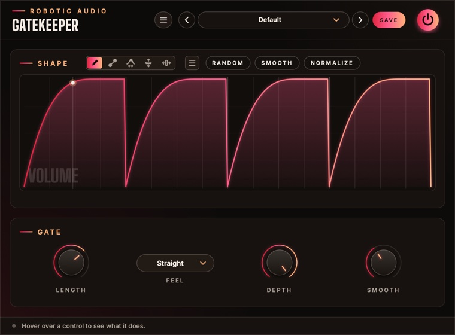

Gatekeeper
Draw a volume shape and Gatekeeper plays it in time with your song, over and over: sidechain-style pumping without a sidechain, trance gates, stutters, swells and chops, from one bar down to a 64th. A small, free plugin built round the envelope editor of Contour.
- Drawn volume shape
- Locked to the song
- 8/1 to 1/64, straight, dotted, triplet
- Ready-made shapes
- No latency
- Free
- AU · VST3 · Standalone

Quick start
From a steady pad to a pumping one in a minute.
Insert it
On a pad, a bass, a bus. Press play: the default shape ducks the sound on every beat, like a kick's sidechain.
Draw
Drag across the shape to draw your own: top is full volume, bottom is silence. Or press RANDOM for a new rhythm.
Set the length
Length is how long the whole drawing takes, from 8 bars (8/1) down to 1/64. 1/1 is one bar.
Set the depth
Turn Depth down to keep some of the sound in the dips; at 0 % it passes untouched.
The window
The shape on top, four controls below.
- Header
- The preset bar (previous, next, the list, SAVE), the power button (bypass) and the menu (three lines) with this manual. Click the logo for the version and credits. With an AI key, a >_ beside the preset bar opens the designer.
- Shape
- The drawn volume over one Length, with the tools, the menu, RANDOM, SMOOTH and NORMALIZE in the card's title. A line shows where it plays and a dot what really comes out. See Drawing & editing.
- Gate
- Length, Feel, Depth and Smooth. See Gate controls.
- Tooltip strip
- Along the bottom: what the control under the mouse does.
How it plays
Always in step with the song.
The drawing is one cycle, Length long, and it follows the host's song position: start playback anywhere and the shape is exactly where it would have been had you started at the beginning. A 1/1 shape always starts on a bar line. When the host stops, Gatekeeper keeps counting on at the song's tempo (120 BPM without a host), so the standalone app and stopped transports keep pumping.
Every sample's volume is read from the shape and multiplied into the sound, both channels alike. There's no latency, and while silence comes in only the position moves on: it costs next to nothing.
Gate controls
How long, how deep, how soft.
- Length
- How long the shape takes to play once, as a note value. The drawing's grid follows it, one step per 16th (up to 128 steps). 8/1 … 1/64
- Feel
- Straight, Dotted (one and a half times as long) or Triplet (two thirds).
- Depth
- How much of the shape reaches the volume. At 100 % the bottom of the drawing is silence; at 50 % it's half volume; at 0 % the sound passes untouched. 0 … 100 %
- Smooth
- Rounds off sudden jumps in the shape, so hard gates don't click. Turn it up for softer edges, down to 0 for the hardest chop. 0 … 50 ms
Drawing & editing
Five tools, edit regions, undo, copy and paste.
Tools
- Draw
- Freehand: drag across the shape.
- Line
- Drag a straight line (its ends snap to the grid; hold Cmd for free). Then drag its end dots to move them, or the ring to curve it: up or down for how much, sideways for where the bend sits. Hold Cmd on the ring for an S-curve.
- Warp
- Grab the shape and drag. Sideways moves that moment earlier or later, stretching the rest; up and down bends the shape smoothly around it.
- Lift
- Drag up or down to raise or lower the edit region (or the whole shape).
- Move
- Drag sideways to slide the edit region along, in grid steps. Without a region it shifts the whole shape round, like a phase shift: move the dips off the beat.
Buttons
- Random
- A new random rhythm on the grid. Click again for another. The menu has more generators: Rhythm, Melody, Organic and Wobble.
- Smooth
- Softens corners and steps in the drawing. Click again to smooth more.
- Normalize
- Stretches the shape to the full range.
- Menu (≡)
- Undo and redo, copy and paste, zoom, edits (Smooth, Normalize, Flip, Reverse), random generators, Waveforms (sine, triangle, saws, square, exponentials: 1–8 cycles or one per grid step), Windows (the smooth bumps of grain and analysis windows: Hann, Gauss, Tukey, Expodec and more) and ready-made shapes by category, Percussion first: single drum hits, rolls, gates and reverses. Right-click the drawing for the same menu.
Edit regions
Shift-drag across the drawing to mark a region. Drawing, edits, Random and shapes then only change that part.
| Handle | Does |
|---|---|
| Upper edge handle | stretches what's inside |
| Round edge handle | repeats the content into the space it's pulled over |
| Top and bottom handles | compress or expand it vertically |
| Small taper handles | fade the amplitude in or out from one end |
| Dots on the curve at the edges | move the start or end value, tilting the content between |
| Edges with Shift held | resize the region itself |
Cmd+C / Cmd+V copy and paste a region or the whole shape, also to and from Contour's envelopes. Shift-click or Esc clears the region. Cmd+Z and Cmd+Shift+Z undo and redo (100 steps).
Zoom
Cmd+scroll or pinch to zoom around the mouse, scroll to pan, Cmd+= / Cmd+- to zoom and Cmd+0 to see it all. The bar along the top shows (and drags) the view.
Presets
The shape is saved with everything else.
Gatekeeper starts at Default, four pumps a bar. Press SAVE in the header to keep your own: the preset stores the drawing as well as the knobs. The preset menu has Save As, Delete and Open Folder; an asterisk after the name means you've changed something since loading it. The shape is saved with your session too. Length, Feel, Depth and Smooth are host parameters and can be automated.
Designing with Claude
Describe a sound; Claude sets Gatekeeper to make it.
With your own Anthropic key, the >_ beside the presets opens a designer: describe what you want in your own words, such as "a choppy sixteenth gate that breathes", and Claude sets every control you could automate (its drawn shape stays yours). It is told what every part does and how it is set now, so it can design from scratch or change only what you ask for.
- Keys
- Menu (three lines) > AI...: an Anthropic key for Claude. They are your own, shared by every Robotic Audio plugin and kept on this computer, never in sessions or presets; each design uses your credits with the service. Without a key nothing of this shows.
- >_
- Left of the preset bar, while a key works: opens the designer over the window. Type a description and press Return (or EXECUTE); ESC closes it, and what is running carries on.
- NEW SOUND / EDIT THIS
- NEW SOUND designs a new patch from your words; EDIT THIS changes the patch as it is, as you ask ("brighter", "less", "more subtle"), keeping the rest.
- REVERT
- Puts the patch back as it was before Claude's last design.
- SAVE AS PRESET
- Keeps the design as one of your presets, named after your words.
- The log
- What Claude made, and what it changed, part by part.
- >_ and AI...
- The designer and its keys: see Designing with Claude.
Recipes
Starting points; then draw your own.
The Default shape, Length 1/1, Depth 70 %. Shift the dips with Move until they sit right on the kick.
Menu → Volume Rhythms, or RANDOM; Length 1/1, Smooth 2 ms, Depth 100 % on a sustained pad.
A square wave (Menu → Waveforms) with one cycle per grid step, Length 1/4, Feel Triplet.
Draw one rise with the Line tool and curve it, Length 4/1, Depth 60 %: a four-bar swell on a loop.
Length 1/16, a sharp Percussion hit like Snap, Smooth 0 ms: a machine-gun repeat. Automate Depth to bring it in.
Specifications
The numbers.
| Property | Value |
|---|---|
| Shape | 257 points, drawn; grid of one step per 16th of the Length (up to 128) |
| Length | 8/1 to 1/64, straight, dotted or triplet, locked to the host's song position |
| Smoothing | One-pole, 0–50 ms |
| Latency | None |
| CPU | Next to nothing; less still while silence comes in |
| Channels | Stereo (mono tracks work too) |
| Formats | AU, VST3, Standalone |